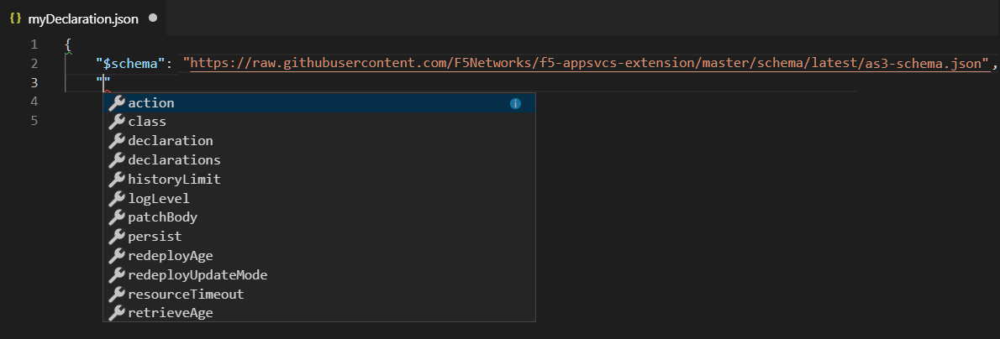
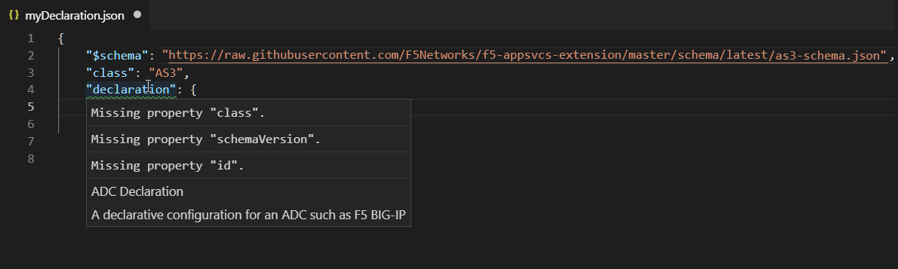
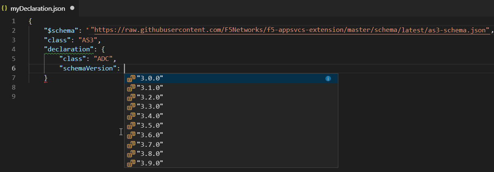
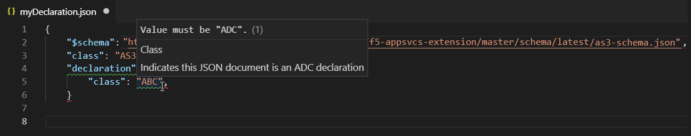
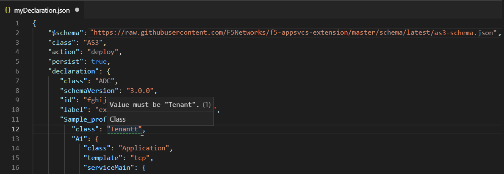
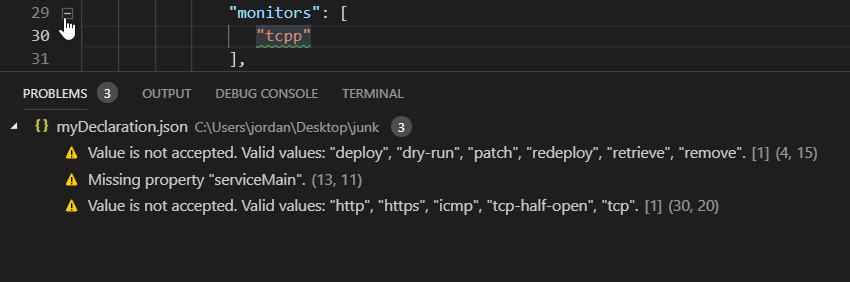

Validating a declaration
In this section, we show you how to validate a BIG-IP AS3 declaration against the schema using Microsoft Visual Studio Code. Using this type of validation is useful when composing a declaration manually, or to check the accuracy of a declaration before deployment.
For more information on editing JSON with Visual Studio Code, see this Microsoft document.
Note
If you are not using the AS3 class (see AS3 Class) in a declaration you are validating, the validation process incorrectly warns that the first class in a declaration must be “AS3”. It is perfectly acceptable to ignore this warning and omit the AS3 class, and start with the ADC class.
To validate a declaration
Use the following procedure to validate a declaration.
Download and install Visual Studio Code.
Go to the schema directory of the BIG-IP AS3 repo on GitHub.
- Click either latest or the specific BIG-IP AS3 version you are using.
- Click the as3-schema.json file (both files in each directory are the same), and then click the Raw tab.
- Copy the URL of the raw schema file.
Open Visual Studio Code, and use File > New File start a new JSON file. In our example, we name our file myDeclaration.json. You must save the file in order for Visual Studio Code to recognize it as a JSON file.
At the top of your schema file, type the following code:
{ "$schema": "",
Paste the GitHub raw URL you copied (if you downloaded the schema file, use the path to the file on your device) between the quotes. When you are finished with this step, your code should look like the following (you may have a different directory than latest):
{ "$schema": "https://raw.githubusercontent.com/F5Networks/f5-appsvcs-extension/main/schema/latest/as3-schema.json",
Begin to type your declaration (if validating an existing declaration, see step 7)
As you begin to type the properties of your declaration, the validation process suggests valid options.

You can also hover on a red wavy line (for JSON syntax errors), or a green wavy line (schema validation errors) to see the problem. In the following example, we have the declaration property, but have not yet included any of the required properties for declaration.

It also suggests valid options for a property in the declaration:

And informs you of required values:

You can also validate an existing declaration by pasting only the $schema line between the opening bracket of the file and the first property of the declaration.
In this example, the validator discovers a typo of the word Tenant.

For a full declaration, it is often easier to view the Problems (View > Problems). In this example, the validator discovers a number of issues. You can click individual problems to go directly to the line with the issue.
